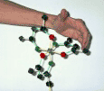

C-3. Determining the Absolute Configuration (Λ or Δ) for a Metal Tris Chelate
a-iii. Review of Method 1
As a review, on the top we show the Λ-Tris(acetonylacetonate)ruthenium(III) moleculePotenially useful commands

Marion can wrap her fingers from back to front along a (any of the three) ligand backbone using her left hand with her thumb pointing towards you; therefore this is the Λ IsomerYou have only one thing to Remember: Lambda = Left
Potentially Useful Viewing Commands:
 Marion can wrap her fingers from back to front along one (any of the three) ligand backbones using her right hand with her
thumb pointing towards you; therfore this is the Δ Isomer.
Marion can wrap her fingers from back to front along one (any of the three) ligand backbones using her right hand with her
thumb pointing towards you; therfore this is the Δ Isomer.